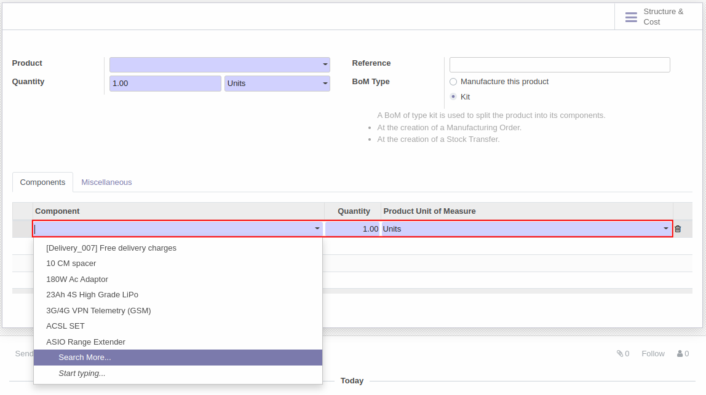
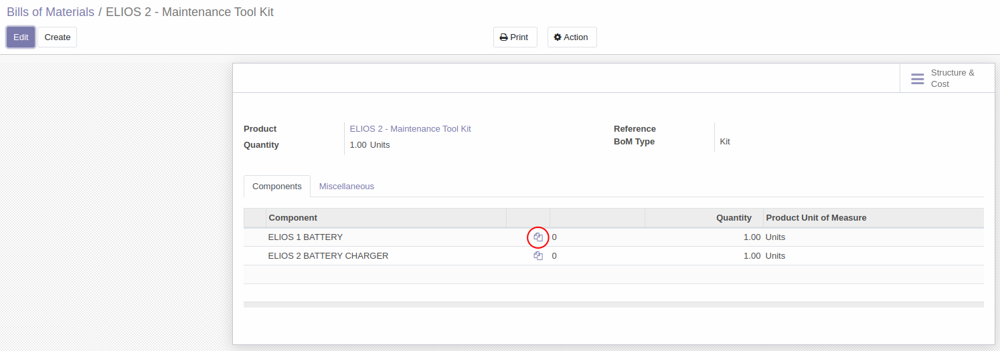

การสร้างชุดของสินค้า (Set of products)
วิธีการสร้างชุดของสินค้า
เมื่อผู้ใช้งานต้องการขายสินค้าที่มีลักษณะเป็นชุด (Set/kit) สามารถสร้างชุดสินค้าด้วย Bills of Materials ได้ตามวิธีด้านล่าง
Menu :: Manufacturing > Products > Bills of Materials
-
กดปุ่ม Create เพื่อสร้าง Bills of Materails ขึ้นมาใหม่

-
ระบบจะแสดงหน้าต่างด้านล่างขึ้นมา

-
1) Product: กดปุ่ม drop down เลือกชุดสินค้าที่ต้องการสร้างขึ้นมา
- โดยถ้ายังไม่มีชุดสินค้าสามารถกดปุ่ม Create ขึ้นมาได้

- โดยถ้ายังไม่มีชุดสินค้าสามารถกดปุ่ม Create ขึ้นมาได้
-
2) Quantity: กำหนดจำนวนและหน่วยนับของชุดสินค้า
-
3) BoM Type: เลือกประเภทของ Bills of Materials ระหว่าง
- ชุดของสินค้าเพื่อขาย (Kit)
- สูตรที่นำไปใช้เพื่อการผลิตสินค้า (Manufacture this product)
-
4) Component: กดปุ่ม Add a line เพื่อเพิ่มส่วนประกอบของชุดสินค้า ว่าชุดสินค้านี้ประกอบไปด้วยรายการสินค้าใด จำนวนเท่าไหร่บ้าง หรือสูตรการผลิตนั้นประกอบด้วยรายการวัตถุดิบใดบ้าง 
-
-
เมื่อกรอกข้อมูลและตรวจสอบความถูกต้องเรียบร้อยแล้วกดปุ่ม Save

-
ระบบจะแสดงหน้าต่างของ Bills of Materials ที่สร้างเสร็จ ถ้ากดเข้าไปที่ไอคอนรูปเอกสารในวงกลมด้านล่าง จะสามารถกดเข้าไปเพื่อแนบเอกสารที่เกี่ยวข้องของรายการสินค้าหรือรายการสูตรการผลิตได้
